-
Norse sea-raiders sack the Anglo-Celtic monastary at Lindisfarne.
793 A.C
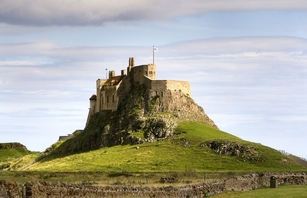 -
Norse raid on Ireland begin
795 A.C
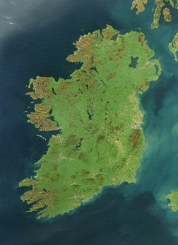 -
Reign of king halfdan the black of Norway
840 A.C
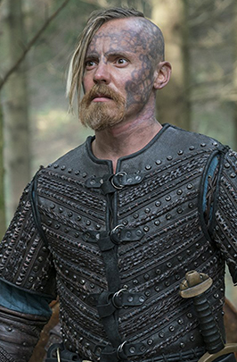 -
Raids on Moorish spain begin
844 A.C
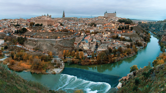 -
First Norse raid on Wales recorded in the Welsh chronicles Annales Cambriae, Brut y Tywysogion and Brut y Saeson stating that a certain Cyngen or Cinnen died on the swords of "the Heathen".
851 A.C
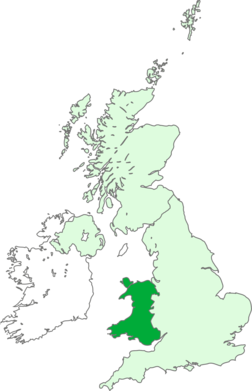 -
Norway discover Iceland
860 A.C
-
The setlement of iceland begins
870 A.C
-
Alfred the Great defeats Guthrum/Guthorm and forces the Viking forces to accept Christianity in return for English for settlement.Harald Harfagra completes his conquest and unification of Norway and the Orkney Islands, many Norwegians flee to Iceland
878 A.C
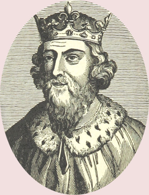 -
Ulfljotr the Norwegian brings the Gulathing Law to Iceland, where it is used as a model upon which Icelandic Law is based.
920 A.C
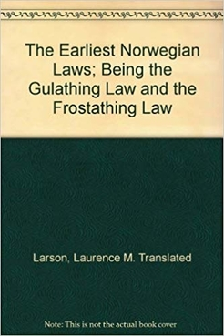 -
Reign of Håkon the good
946 A.C
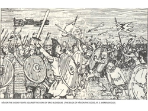 -
Start of reign of King Olafr Tryggvasson of Norway, Norway adopts Christianity.
947 A.C
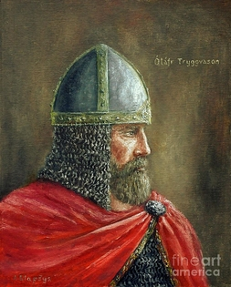 -
Leifr Eiriksson makes his voyages to Vinland (America), attempts made to settle there are prevented by opposition from skraelings (Native Americans).
1000 A.C
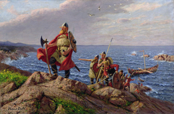 -
Ard-Righ Brian Boru defeats the Norse in Ireland at the battle of Clontarf, both Brian and Jarl Sigurdhr of Orkney are slain.
1016 A.C
-
King Olaf the Saint is killed at Stiklestad.
1030 A.C
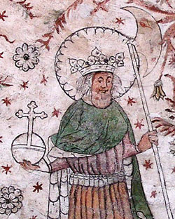 -
Haraldr Hardrada, king of Norway, is killed during an attempted invasion of England fighting against Harold Godwinsson, the English king.Harold Godwinsson is killed at Hastings by the forces of Duke William (the Bastard) of Normandy.The Norman Conquest takes place.The practice of "going viking" ends.
1066 A.C
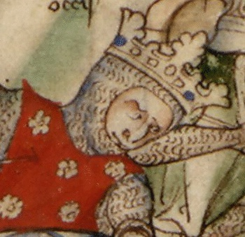